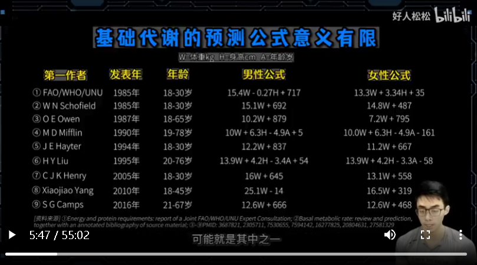

<!DOCTYPE html>


  <html lang="en">
    

    <head>
      <meta charset="utf-8" />
        
      <meta
        name="viewport"
        content="width=device-width, initial-scale=1, maximum-scale=1"
      />
      <title>《健身新手的减脂完全手册》 |  小熊的小站</title>
  <meta name="generator" content="hexo-theme-ayer">
      
      <link rel="shortcut icon" href="/favicon.ico" />
       
<link rel="stylesheet" href="/dist/main.css">

      
<link rel="stylesheet" href="/css/fonts/remixicon.css">

      
<link rel="stylesheet" href="/css/custom.css">
 
      <script src="https://cdn.staticfile.org/pace/1.2.4/pace.min.js"></script>
       

<script type="text/javascript">
(function(i,s,o,g,r,a,m){i['GoogleAnalyticsObject']=r;i[r]=i[r]||function(){
(i[r].q=i[r].q||[]).push(arguments)},i[r].l=1*new Date();a=s.createElement(o),
m=s.getElementsByTagName(o)[0];a.async=1;a.src=g;m.parentNode.insertBefore(a,m)
})(window,document,'script','//www.google-analytics.com/analytics.js','ga');

ga('create', 'UA-228563528-1', 'auto');
ga('send', 'pageview');

</script>


 
<script>
var _hmt = _hmt || [];
(function() {
	var hm = document.createElement("script");
	hm.src = "https://hm.baidu.com/hm.js?71ee62302f36ca8f840077a641705255";
	var s = document.getElementsByTagName("script")[0]; 
	s.parentNode.insertBefore(hm, s);
})();
</script>


      <link
        rel="stylesheet"
        href="https://cdn.jsdelivr.net/npm/@sweetalert2/theme-bulma@5.0.1/bulma.min.css"
      />
      <script src="https://cdn.jsdelivr.net/npm/sweetalert2@11.0.19/dist/sweetalert2.min.js"></script>

      <!-- mermaid -->
      
      <style>
        .swal2-styled.swal2-confirm {
          font-size: 1.6rem;
        }
      </style>
    </head>
  </html>
</html>


<body>
  <div id="app">
    
      
    <main class="content on">
      <section class="outer">
  <article
  id="post-20230319"
  class="article article-type-post"
  itemscope
  itemprop="blogPost"
  data-scroll-reveal
>
  <div class="article-inner">
    
    <header class="article-header">
       
<h1 class="article-title sea-center" style="border-left:0" itemprop="name">
  《健身新手的减脂完全手册》
</h1>
 

      
    </header>
     
    <div class="article-meta">
      <a href="/2023/20230319/" class="article-date">
  <time datetime="2023-03-19T08:17:05.000Z" itemprop="datePublished">2023-03-19</time>
</a>   
<div class="word_count">
    <span class="post-time">
        <span class="post-meta-item-icon">
            <i class="ri-quill-pen-line"></i>
            <span class="post-meta-item-text"> Word count:</span>
            <span class="post-count">14.6k</span>
        </span>
    </span>

    <span class="post-time">
        &nbsp; | &nbsp;
        <span class="post-meta-item-icon">
            <i class="ri-book-open-line"></i>
            <span class="post-meta-item-text"> Reading time≈</span>
            <span class="post-count">49 min</span>
        </span>
    </span>
</div>
 
    </div>
      
    <div class="tocbot"></div>


  
    <div class="article-entry" itemprop="articleBody">
       
  <link rel="stylesheet" type="text&#x2F;css" href="https://cdn.jsdelivr.net/npm/hexo-tag-hint@0.3.1/dist/hexo-tag-hint.min.css"><p>来自<a target="_blank" rel="noopener" href="https://www.bilibili.com/video/BV1AM411r7z3/">B站版《健身新手的减脂完全手册》™</a></p>
<hr>
<p>这个视频介绍合理理减脂的方法</p>
<p>实际上,减脂从根本上说是一个方法问题,和网上宣传的要有毅力,要坚持,要自律都没什么关系。</p>
<h2 id="减脂原理"><a href="#减脂原理" class="headerlink" title="减脂原理"></a>减脂原理</h2><h3 id="要有10-20-的热量缺口"><a href="#要有10-20-的热量缺口" class="headerlink" title="要有10%-20%的热量缺口"></a>要有10%-20%的热量缺口</h3><p>我们的热量涉入来自于食物,热量消耗在来自于两方面,主要是基础代谢,其次是活动消耗。左右两边热量相等的话,你的体重就会不增不减,叫做热量平衡点。想要减脂左边的热量涉入,要比右边的热量消耗少20%。</p>
<p>热量缺口一定要有,但也不需要太大。而热量缺口怎么来的呢?即可以从左边减少一点热量涉入,也可以从右边多做一点有氧活动来提供,或者两者兼而有之。<br>减脂性的基础代谢是提高不了的,我们争取不让它超额下降就可以了。</p>
<span id="more"></span>

<h3 id="碳氮脂的比例"><a href="#碳氮脂的比例" class="headerlink" title="碳氮脂的比例"></a>碳氮脂的比例</h3><p>热量涉入是按照每克碳水蛋白质脂肪分别449大卡来求和的。</p>
<p>$$<br>热量摄入(kcal)=碳水<em>4kcal+蛋白质</em>4kcal+脂肪*9kcal<br>$$</p>
<p>定碳氮脂就定了热量,但定的热量不代表定了碳氮脂。<br>所以我们在热量平衡点的基础上降低了10%-20%热量后,还要按照一种经验化的碳氮脂比例而非任意的比例去组成这个热量。</p>
<h3 id="碳水的日内分配"><a href="#碳水的日内分配" class="headerlink" title="碳水的日内分配"></a>碳水的日内分配</h3><p>在热量一定碳碳脂配额也一面的情况下,把碳水放在不同的时间去吃,就可以人为的操纵胰岛素的升降,也会影响到我们的减脂效果。<br>就像我们玩游戏的时候有timeing的概念,碳水涉入也有timeing。<br>尤其是对于健身距离来说,碳水的timeing是减脂期保护肌肉的一个重要策略。</p>
<h3 id="小结"><a href="#小结" class="headerlink" title="小结"></a>小结</h3><p>首先是要有10-20%的热量缺口,饮食和有氧都是制造这个热量缺口的手段。<br>其次是应吃的热量要以特定的碳氮脂比例来提供,再次是管理碳水的日内分配。<br>这三个原理都和饮食有关,而有氧只适合热量缺口有关。<br>所以说,减脂里饮食比有氧更重要,也更复杂。</p>
<h2 id="饮食"><a href="#饮食" class="headerlink" title="饮食"></a>饮食</h2><h3 id="热量平衡"><a href="#热量平衡" class="headerlink" title="热量平衡"></a>热量平衡</h3><p>但在我们吃下去后,热量会有两个损失过程,首先是因为不完全吸收造成的热量损失。<br>人体排泄物里会减出少量的碳碳脂及其衍生物,因此学界把碳碳脂热量下调为449大卡。<br>如果还要考虑消化碳碳脂对我们身体造成的额外发热的这种食物热效应,碳碳脂的倒手热量还可以继续下调为3.8,2.8,8.55大卡。</p>
<table>
<thead>
<tr>
<th>单位kcal/g</th>
<th>碳水</th>
<th>蛋白质</th>
<th>脂肪</th>
</tr>
</thead>
<tbody><tr>
<td>食物能值</td>
<td>4.1</td>
<td>5.65</td>
<td>9.45</td>
</tr>
<tr>
<td>考虑吸收率</td>
<td>4.0</td>
<td>4.0</td>
<td>9.0</td>
</tr>
<tr>
<td>考虑热效应</td>
<td>3.8</td>
<td>2.8</td>
<td>8.55</td>
</tr>
</tbody></table>
<p>在计算食物热量时,我们用这两种标准都可以,因为食物热量的绝对值是不重要的,我们要的是减脂的10%-20%的热量缺口,和增计的10%-20%的热量盈余。<br>乘以这个百分比后,两种计算标准的差额其实是不大的。</p>
<h4 id="我们怎么计算自己吃的食物热量呢"><a href="#我们怎么计算自己吃的食物热量呢" class="headerlink" title="我们怎么计算自己吃的食物热量呢?"></a>我们怎么计算自己吃的食物热量呢?</h4><p>一种办法是用我在评论区放的一个食物热量计算的EXCEL表,把日常食物录进去,输入食物分数,来得到碳碳脂的量和总热量。<br>另一种办法是用薄荷APP来记录自己的食物,两种办法在本质上都是一样的。</p>
<h3 id="热量消耗"><a href="#热量消耗" class="headerlink" title="热量消耗"></a>热量消耗</h3><p>$$<br>热量摄入=基础代谢+活动消耗<br>$$<br>一般人的热量消耗主要靠的是基础代谢,基础代谢就是在完全进息状态时身体要活着所需要的能量,就要比手机吸平时也要耗电一样。<br>其次的热量消耗来自于活动,就是我们上班上课,走路骑车,路铁游养等一切身体活动导致的热量消耗。<br>如果左边的热量消耗和右边的热量设入相等,那么你的体重就会不变,这个数值叫热量平衡点。<br>如果要减脂,就要在热量平衡点的基础上减少10%-20%的热量设入来形成热量缺口,迫使人体分解脂肪来填补热量差。</p>
<p><br>那么接下来大家会问,我总得知道自己的热量平衡点到底是多少,才能去做减法吧?<br>我们就先来说通过公式计算,估算热量平衡点。<br>科研工作者通过大量测试,归纳出过一些公式去预测人体的基础代谢,我大概整理了一些。<br>大家在网上看到的各种基础代谢的计算公式,可能就是其中之一。<br>这些公式都以体重为唯一变量,个别公式引入了年龄和身高作为变量,但影响不大。<br>这些公式里,体重仍然是主变量。<br>不同公式的预测结果有一定差距,你可以把自己的数据带入看看。<br>现在我们按照一男一女带入,会得到这些不同的结果。<br>以最低预测值为记者,其他预测值高出了百分之几到十几不等。<br>我们不好说哪个结果是对的。<br>虽然他们之间的彼此差距看起来不大,但问题是我们减值所需要的热量差本来就只需要10-20%,<br>而预测公式的偏差幅度就可能有这么多了。<br>所以,公式算出的基础代谢有一定参考性,但它对于减值的指导意义还是比较有限的。<br>更大的问题是活动消耗的预测公式,左边是网上常见的一个计算版本,<br>右边是中国营养学会给出的版本。<br>前面说的基础代谢的预测公式,起码让你带入体重、身高、年龄等数字去计算,<br>而活动消耗的预测公式则完全靠文字描述请你去对好入座,主观性很强。<br>像左边这种计算,它让你按每周的运动次数来估计活动消耗,不分运动的类型、强度、时长。<br>如果你在健身房每周拌铁三次,活动消耗既为基础代谢的0.375倍,<br>不过你不拌铁了,改为一周六次每天做10分钟的HIT,<br>活动消耗既为基础代谢的0.725倍,使得我们的热量平衡一下就增加了35%,<br>这显然是不合理的。<br>另外,我们的活动消耗也不只运动这一件事,上班上学等不同的职业活动都属于热量消耗的反酬,<br>这个公式是不予考虑的。<br>右边这种计算是按职业来分类的,其实也很主观。<br>比如在办公室工作,归为清新劳动,比学生的消耗还要少。<br>实际上,同样是在办公室工作,有人是朝九晚五的喝茶看报,有人是久久六的社主工作,<br>是不能用同一个系数来改过的。<br>另外,大家除了职业不同,职业之外的个人运动的消耗量也是不同的,这个公式也没有考虑到。<br>总之就是说,活动消耗的预测公式是很主观和不准确的。<br>当然有人会说,本来就是让你估计一下,不准确就不准确呗。<br>但问题是,我们的减值本来就只需要10%-20%的热量差,而光是活动消耗这块的估计值,<br>动辙就可以让热量平衡点变动30%-40%,那么这个估计结果对我的意义,当然就很有限。<br>所以,减值到底应该吃多少热量,除了按照上面这些预测公式去计算外,<br>我觉得一个更好的操作办法就是,既然算不准,那就别算了,<br>你可以直接按经验化配额开始试吃,并做出调整就行了。<br>所谓经验化配额,就是大家总结出来的对于一般人群按照这个量去吃,<br>就可能恰好有10%-20%的热量缺口,让你开始掉体重。<br>健身饮食里说的每天吃几克,是至每公斤体重的日射入量。<br>比如碳水吃3克,就是70公斤的人每天吃210克碳水。<br>很多讲解里说的配额是从健身男性的角度去考虑的,对于女性来说会多了一些,<br>因为同体重、同活动的女性和男性相比,要让平衡点要低一成多,<br>所以我们这里把女性的碳水和蛋白质配额降低一些,<br>而不健身的人群需要的热量更少,需要的蛋白质也更少,<br>所以我们把他们的蛋白质配额再降低一些。<br>按经验化配额边吃边调整的具体做法是,你先按这个配额吃两周,<br>如果这两周你的体重能掉1.5%-2.5%,大概是2-3斤或3-4斤,那就很合适。<br>简直前期,因为碳水的突然降低,体重会掉得快一点,往后会更加和缓。<br>如果你的体重完全不掉,就说明这个热量、这个配额是你的热量平衡点,<br>需要降低热量才能有热量缺口。<br>调整的办法是,蛋白质和脂肪不变,下调碳水0.3-0.5克即可,<br>这样试探者就制造出了热量缺口,大概率能引起体重下降了。<br>在简直期里,体重能掉就说明一切正常,不用减碳水,<br>体重不掉就还是下调0.3-0.5克碳水。<br>但碳水不是无限递减的,非比赛型的简直里,碳水最后也不要低于2克。<br>这样的配额是能支持大家完成简直的,<br>如果继续降低配额的话,就可能影响上班上学的状态了。<br>有些人可能会说,我不信,为什么我现在吃的比你说的简直后期的配额还要少得多,<br>但是我就是不掉体重腰围呢?<br>这很可能是因为你吃的太少而伤害的基础态限,反而没有热量差了。<br>这是普通人简直里特别常见的问题,我们稍后会讲。<br>这里顺便说一下,我们为什么是以两周而不是两三天来看体重变化?<br>我们每天体重变化的因素,一是体内食物的注流排空程度的差异。<br>有人会说,我总是空腹量体重,但这种空腹只是清除了大肠断的部分食物残渣而已,小肠断的食迷是排不掉的。<br>真正的空腹你去做一次,长劲就懂了。<br>要进食12小时并提前6小时喝泄药才能实现空腹。<br>我们平时说的空腹是还有食物注流的,可能导致每次量体重相差半斤八凉也不奇怪。<br>其次人体的脱水和吸水也很能影响体重,比如泰水食物量能直接影响鸡糖原储量,一克鸡糖原能扭住三克水,<br>人体内三五百克鸡糖原的变化就能造成体重两三斤的变化。<br>另外,那里子食物量变化以后,在水那平行的要求下,人体必须随之吸收或排出水,这也会影响体重。<br>极端的例子是,健身比赛选手上台前会停止吃盐和大量喝水来降低体内的那里子。<br>在水那平行的作用下,人体也随之排水,他们两三天就能丢好几斤的体重,这就是那里子对体重的影响。<br>生活里总有人说,我低碳低盐几天就能掉几斤体重,我一恢复饮食吃几天就长几斤体重。<br>这并不是因为在这么短的时间内,就能分解掉和合成出几斤的脂肪,那是不可能的。<br>主要就是因为低碳低盐能导致脱水掉体重,高弹高盐能导致吸水长体重。<br>最后,肌肉和脂肪的重量变化也能影响体重,这也是我们真正关心的。<br>不过肌肉和脂肪的重量变化是极其缓慢和微弱的,他们和短期内的体重变化几乎没有关系。<br>比如有人说自己乱吃东西,一天就长了一斤。<br>那我们来分析一下一天长一斤是否可能是肌肉或脂肪造成的呢?<br>首先不可能是肌肉造成的,没有人能一天长出一斤肌肉,同时也不可能是脂肪造成的,<br>因为一斤脂肪的热量是4500大卡,相当于4.5公斤米饭。<br>也就是说一个人必须在热量平衡点的基础上,在这一天里额外再吃4.5公斤米饭,<br>才可能利用这个热量盈余来合成出一斤脂肪。这当然是不可能的事情。<br>同样的,如果一天降低了一斤体重,也不能认为是今天分解了一斤脂肪,<br>因为需要在这一天里少吃或者运动消耗4.5公斤米饭的热量,才可能分解一斤脂肪。<br>这也是不可能的。<br>所以我们看体重一定不要只看两三天的变化,建议大家以两周来看变化。<br>为什么呢?我们用这张示意图简单解释。红色线表示脂肪量,它的增减波动很小,<br>但能随着时间退一而持续积累,一直减值就一直下跌。<br>绿色线表示食物注流排空和人体脱水吸水的重量变化。<br>它的增减波动很大,但不能持续积累,不能往上或往下的持续发展。<br>如果你两三天就去比较体重,哪怕你的红线脂肪确实降低了,<br>但绿线的波动更大,可以轻易覆盖掉红线脂肪的变化。<br>这时候体重的增减主要是绿线造成的,你无法通过体重变化来判断脂肪量的变化。<br>相反,你10天半月再去比较体重的话,你的红线脂肪的降低量已经绘积累的更多了。<br>绿线的波动就没有那么容易覆盖掉红线脂肪的变化。<br>这时候你才能从自己的体重变化里看出脂肪量的变化。<br>所以我们这里讲影视配额时,说的是以两周为周期来看体重变化并判断配额是否合适,<br>而不是让你吃两三天就去判断。<br>短期内的体重变化很难判断脂肪,<br>因为脂肪在短期里根本就不可能合成或分解多少来。<br>好了,以上我们先把碳碳脂总量讲完,那是不是这些既定的碳碳脂,<br>以任意方式分配到各参区,减脂效果都一样呢?<br>当然不是,所以我们还要关注碳碳脂的日内分配。<br>对既定的碳碳脂总量进行日内分配,主要是为了人为的操纵移道素来帮助减脂器多调脂肪找到肌肉。<br>移道素的功能是把血液里的葡萄糖胺计算等营养物质转晕到肌肉组织和脂肪组织里。<br>让肌肉和脂肪进入合成状态。<br>作为合成基素,移道素既能增计也能增值。<br>在没有力量训练的时候,身高移道素当然不会增弃,使会增值,这是移道素的负面作用。<br>但在力量训练之后,肌纤围已经破坏,身高移道素就能在增值的同时会促进增计,这是移道素的正面作用。<br>所以我们对移道素的管理的基本思路就是,力量训练和迅口餐要故意升高移道素来促进增计。<br>这天的其他餐以及休息日的时候,则要保持移道素的相对稳定。<br>我们来看饮食是如何影响移道素的。<br>科研工作者让寿室者设入同等热量的碳水蛋白质脂肪,然后监测他们的移道素变化。<br>结果是碳水最能刺激移道素分泌,蛋白质的刺激能力弱一些,脂肪的刺激能力最弱。<br>也就是说,我们不管吃什么东西都会刺激移道素分泌,我们要做的是对移道素刺激能力最强的碳水移向,进行合理的分配来趋力避害。<br>碳水有三个主要的投放时间点,最大的投放时间点是迅口餐。<br>迅口餐可以吃全天50%左右的碳水,加30-5车蛋白质,脂肪要少最好在20克以内。<br>碳水量大且用快碳,目的是为了升高移道素。<br>蛋白质也比较多,是为了给肌肉修复提供原料并且进一步升高移道素。<br>低脂不是因为害怕脂肪本身,而是因为脂肪对移道素的刺激能力比碳水要差得多。<br>所以在迅口餐总热量一定的前提下,低脂才能让出热量,吃缓成高碳,让迅口餐的移道素更高。<br>迅口餐的时间是最好能在练完半小时内开始吃上,不要抹几大半天都不去吃东西。<br>迅口餐的方式,如果能很快地吃上正餐,就直接去吃正餐。<br>如果没法很快吃到正餐,就可以用蛋白粉加便携快碳先淀一部分,剩一部分再用正餐补齐。<br>赶时间的话还可以全部用蛋白粉加便携快碳来解决,这样就不用吃正餐了。<br>便携快碳我用单独一页来举例,这些只是很少的一部分。<br>只要它的碳水率是脂肪率的5倍以上,并且是以糯米、面粉等精致碳水制成,就可以算作便携快碳了。<br>迅口餐故意升高移道素是非常重要的。<br>之前陆家们闹内部矛盾的时候,他们内部一位职业运动员在网上挂出过他们内部的饮食方案。<br>可以看出,他们训练后吃大量快碳来做高移道素,同时自己还要注射食物单位的外圆性移道素。<br>我不是让大家去复制他们这么大的碳水量,也不是让大家去打移道素,而是想强调,力量训练后升高移道素是非常重要的。<br>碳水的第二个投放时间点是早饭,早饭可以吃全天30%的碳水,碳水GI无所谓。<br>蛋白质和脂肪没太多要求,多少一点都可以,全天总量合规就行了。<br>一晚上的空腹后我们的血糖是很低的,早饭给一些碳水,让血糖升高一些是必要的。<br>不要在低血糖状态下开始上班上学。<br>早饭有点麻烦的是碳白质来源很少,如果是吃食堂的话,两个鸡蛋加一包牛奶差不多能凑合20克蛋白质,<br>但同时也有快20克脂肪了。这就意味着早饭的碳水不能是从油条煎饼、麻团等糖油混合物理获取,<br>只能来自于馒头花卷面条等纯碳水,否则早饭就可能花掉你全天大部分的脂肪配额。<br>如果是自己冲条早饭的话,碳水可以用燕麦片、燕麦敷、玉米粉、藕粉、芝麻糊等,蛋白质则用蛋白粉来提供。<br>碳水的第三个投放时间点是去面前,去面前可以吃全天20%的碳水,是中等或中高质爱的碳水都行,<br>如葱凉面包、香蕉、葡萄干、浙堂饮料等。这些碳水量也就小几时刻,使过定电肚子,不至于让你持撑影响训练,也不至于让你血糖飙升。<br>训练前给点碳水的目的是为了温和的提供血糖支持,让训练有力气,也能抑制训练过程里的肌肉分解,比喝支炼胺基酸还划算。<br>时间是你到了健身房吃都来得及。这张图我都发过好多次,不管是快谈慢谈吃下去,血糖都会立即升高,在半小时到一小时左右达到高点。<br>所以你到了健身房就吃,加上你换衣服、热身等单个的时间,这样你在训练中程正好匹配上碳水给你的血糖。<br>除了上述的迅候早饭迅前,其他餐的时候碳水可以少吃奶制不吃,主要靠吃蛋白质纸防和蔬菜来填饱肚子。<br>其他餐如果你专门去吃比较多的碳水来刺激到素的话,更可能起到增值的作用。<br>在增基期的时候由于碳水的总配额比较多,所以其他餐一般还能吃一些碳水。<br>但在减脂期的时候,尤其是碳水配额低于2.5克每公斤以后,也会明显感觉到全天碳水很紧张。<br>这时候就特别需要注意在其他餐节约碳水出来,有些满足迅候餐早饭迅前餐,尤其是不能抢劫迅候餐的碳水去给其他餐吃。<br>以上我们讲的是对碳单纸做日内分配来对移导素区立毕害,实际上就是碳水分配很讲究。<br>蛋白质和纸房不太讲究,只需要注意迅候餐要保证有30-50个蛋白质并且要20克以内低质。<br>其他时候的蛋白质和纸房分配可以集中一些,也可以均匀一些,这不重要,全天总量合规就行了。<br>下面我们按照大家不同的训练时间,根据上述的碳单纸分配原则,给大家列出了各餐的分配方案,不然有些观众还是看不懂。<br>早饭后就训练的人,直接把早饭作为你们的迅前餐。吃到早饭就开始练。<br>这一餐吃到六七分饱就好了,所有的练前餐都不要吃成全饱,完全保护的锻炼是很不舒服的。<br>练完后你直接吃迅候餐,如果不方便吃上正餐的话可以蛋白粉加便宜快餐来解决。<br>午饭和晚饭都是你的其他餐,我这里给了一点碳水,不然整个下午和晚上的时间太长,不吃碳水的话有些人会习惯不了。<br>再来看午饭前训练的人,把午饭作为你们的迅候餐,然后晚饭是你们的其他餐,理论上可以不吃碳水了。<br>你如果确实不习惯的话可以云一点碳水给晚饭,但一定要少,如果你把其他餐的碳水拉高了,本质上就是在抢劫迅候餐。<br>再来看晚饭前训练的人,把晚饭作为你的迅候餐,你的午饭是其他餐,理论上可以不吃碳水。<br>同样的,如果你不习惯的话,还是可以云一点碳水给午饭,但还是要少。<br>越是减脂期推进的时候,因为碳水总配额越来越紧张,所以大家就越来越需要注意把其他餐节约碳水出来让给迅候早饭迅节,尤其是不能去抢劫迅候餐的碳水。<br>最后是晚上才训练的人,这是很多上班族的情况,你可以把晚饭当作迅前餐,吃到个六七分饱垫垫肚子,就去练了。<br>重点是练完一定要吃迅候餐,晚上健身的人很容易对饮食进行反向操作,在午饭晚饭这些不太需要碳水的时候,他们米饭馒头尬尬地吃。<br>但晚上训练后又不敢吃任何碳水了,理由是白天已经吃过了,再吃就会长胖。<br>为什么其他餐吃那么多碳水都不怕胖,迅候餐吃碳水就会长胖呢?<br>实际上他们的问题是碳水的日内分配错了,他们在白天就把迅候餐的碳水给抢劫过来吃完了。<br>正确的做法是,午饭和晚饭的碳水都不要太多,练完后的迅候餐才是全天最大的一顿。<br>这样就把他们的反向操作给纠正过来了。<br>以上四种训练时间的饮食方案我列的都是四餐,带的总量都是一模一样的,没有谁比谁多吃,只是各餐的分配不同。<br>思路都是从其他餐节约碳水出来,优先供应给训后早饭训前。<br>唯一区别是吃了早饭就训练的人,和晚饭后才训练的人,我在他们的其他餐里放了一点碳水,否则他们每天会有一个很长的午碳水时间,有些人会觉得受不了。<br>最后是休息日怎么吃。休息日没有力量训练,没有增计窗口期,所以不要故意去升高移道素。<br>做法就是,每餐都是碳蛋纸的混合,各餐大概分碳就行。<br>总量上碳水可以减少一些,但白吃个纸房基本不变,多少一点也没事。<br>休息日碳水总量的减少是自然发生的,因为在休息日你不会吃迅前那20%的碳水,<br>迅后那50%的大碳水会改成常规量碳水,这样扣减以后,休息日的碳水总量自然就变少了。<br>因为碳水的总量减少了一些,再加上各餐的碳蛋纸是大概分碳的,这样全间的移道素就会比较稳定,从而减少移道素增值的负面作用。<br>当然,前面我们已经说了,只要一进食就会引起移道素分泌,我们能做的只是让它相对稳定不要太高而已。<br>好了,上面我们把碳蛋纸的总量和分配都说完了,你自己去找食物,配餐组合出这些碳蛋纸就行了。<br>但有的人肯定会说,不知道哪些食物里有碳蛋纸,所以我们再影视的最后一部分,讲一下食物来源。<br>首先讲碳水食物,碳水食物有两个属性,一是它的碳水率,就是100克这种食物里有多少个碳水,这个好理解。<br>另一个属性是它分解为葡萄糖的速度,也就是大家常说的高中低Gi碳水,或者快碳慢碳。<br>所有的碳水食物都必于分解为葡萄糖后才能进入血液工人体利用,<br>如果一种碳水吃下去后血糖上升得很快,就说明它分解为葡萄糖的速度很快。<br>Gi就是用来描述碳水分解为葡萄糖速度的一种指数。<br>怎么测食物的Gi呢?<br>我们再次引用这张图。<br>这条最高的线是受试者吃了含有50克碳水的葡萄糖后的血糖曲线。<br>比如葡萄糖水的浓度如果是软面20,那么他们就要吃250克葡萄糖水。<br>另外几条线是其他类型的碳水,也是让受试者吃含有50克碳水的食物来看血糖曲线。<br>比如金米饭的碳水率是25%,所以就要吃200克金米饭。<br>接着以0分钟到120分钟为界限,把葡萄糖曲线下方面积视为100。<br>其他食物的曲线下方面积是多少,它的Gi就是多少。<br>比如金米饭的血糖曲线很猛,它的曲线下方面积并不比葡萄糖小多少,可能算出来是80。<br>那么金米饭的Gi就是80,又比如五股饭的曲线比较平缓。<br>它的曲线下方面积会比葡萄糖小的多,可能算出来是40,那么五股饭的Gi就是40。<br>这就是Gi的测量办法,测的是涉入50克碳水后在120分钟内的血糖曲线下方面积。<br>在这张表里,我给大家列出了常见的高中低Gi碳水食物。<br>在应用上,训练过餐一般吃高Gi碳水去促进移导宿升高,其他时候则比较随意。<br>碳水的Gi值得我们关注,但也不是说极端重要,因为Gi是影响移导宿的众多因素里的其中之一而已。<br>碳水量、蛋白质量、纤维素量,乃至静时的顺序都能影响移导宿。<br>我们需要综合考虑,而不是只论快慢碳。尤其是碳水量的影响是很大的,你一餐的碳水量够大的话,移导宿就不会低。<br>所以我们说碳水的Gi值得关注,但又不要觉得就是它除载了移导宿。<br>接下来讲脂肪,脂肪的食物来源和碳水一样便宜都是,简直期的脂肪一定要吃够保底量。<br>脂肪是许多性激素的前提,也是脂溶性维生素,比如维生素AD1K,它们的吸收载体。<br>脂肪一旦吃少了,可能导致心肌素缺乏,如男性的搞冻下降,女性的生理期稳乱,以及导致使绍性维生素缺乏引起的各种刺身症状。<br>要知道我们设计的饮食配额已经有热量缺口了,那种近乎领指的饮食会把热量缺口搞得太大,也无法发挥脂肪的生理功能,只是一种自我摧残,对减脂是有害无益的。<br>那么,脂肪怎么吃才能比较合适呢?我的建议是炒菜的植物油,鸡蛋,牛奶,正常吃,尤其是炒菜千万不要放弃。<br>炒菜里的植物油并不多,不管是清炒还是重油,一家菜一片肉,它能附着的油量是有限的。<br>只要你不是去喝油汤或者舔盘子,你是吃不尽多少油的。<br>你要是真的害怕油,你就刮一下,甚至过一下水就行了。像左边这种清炒的菜,一人份你记为五克脂肪就够了。<br>像右边这种比较重油的菜,一人份你记为10-15克脂肪也够了。反正我自己是从来都吃食堂的炒菜,<br>包括水煮肉片、凉拌鸡,这些看起来牛稍微重一点的菜,我都是正常吃的。<br>在一般炒菜之外,有两类食物会隐藏很多脂肪,你要特别谨慎。一种是往内部吸油的菜,比如炒鸡蛋、炒茄子、炸蘑菇等。<br>前面说了,菜品表面能附着的油量是很有限的,但它如果能往内部吸油的话,就可以变得很猛了。<br>像炒鸡蛋我看过几个测评视频,如果是饭馆、食堂那种宽油炒蛋,一个鸡蛋能吸油20-30克。<br>要知道一个鸡蛋本身是5克蛋白质加6克脂肪,你吃一个炒鸡蛋只获得了5克蛋白质,却同时送给你30克脂肪,直接把你全天的脂肪配额占掉一大半。<br>所以说,这些往内部吸油的菜大家叫谨慎,不是说不能吃,但它非常占脂肪配额,你要吃的话就要正确进入配额。<br>除了这些往内部吸油的菜,另一类需要特别谨慎的是固体脂肪。固体脂肪的问题是,你看不出它有脂肪,<br>所以你觉得自己没有吃脂肪。<br>左边这样常用的白瓷勺一勺油是6克,让你喝下去你肯定觉得很离谱。<br>如果让你吃右边这样一个星巴克的常规高点,我们不会觉得多严重,但实际上有30多克脂肪,相当于喝了6勺油。<br>如果让你吃肯的鸡蛋两个蛋挞,你觉得并不离谱,实际上有30克脂肪,相当于喝了5勺油。<br>如果早饭吃两根油条,你觉得很正常,实际上也是30克脂肪,相当于喝了5勺油。<br>如果让你吃两把坚果,你觉得是特别健康的食物,实际上也是40多克脂肪,相当于喝了7勺油。<br>总之,我们会很紧替液体脂肪,但脂肪以固体形式存在时,你就会不知不觉地吃下去。<br>这些脂肪刺客不是说不能吃,而是说你要正确地寄入自己的脂肪配额。<br>你不能花啦啦的吃了一堆脂肪,又说自己没有吃。<br>现实中有很多人对炒菜里的那点植物油津津计较,但吃起固体脂肪的时候一点都不客气,这就颠倒主次了。<br>所以,我建议大家一般的炒菜鸡蛋牛奶也都正常吃,尤其是不要放弃炒菜。<br>拒绝吃炒菜的话,就会失去食物的舒适性和便捷性。<br>同时,对于往内部汐油的菜,以及肥肉、糖油混合物、坚果这些固体脂肪,要谨慎一些。<br>这些是可以吃,没问题,但它们会比较占你的脂肪配额,吃了就要正确地寄入配额。<br>脂肪方面最后再说下所谓的优质脂肪问题。<br>现在网上特别强调优质脂肪,说简直要吃坚果、花生酱这些富含不饱和脂肪酸的优质脂肪才行。<br>言下之意,植物油等其他的脂肪食物就是不优质脂肪了。<br>其实这是一个四十二非的说法。<br>首先,饱和、单不饱和、多不饱和这三种脂肪酸各有其真理功能都是人体所必须的,<br>本身就没有谁优质谁劣质之分。<br>包括中国营养协会在内,主要国家对三种脂肪酸设备的比例建议大概是1比1比1。<br>现在网上有些人把三种脂肪酸都要分出优劣来,这本身是很奇怪的。<br>其实我们再来看我们日常食物里的具体的脂肪酸比例。<br>常用的植物油的脂肪酸就是以不饱和脂肪为主的,这一点和坚果区别不大。<br>饱和脂肪烧高的是肥肉和乳质品,但也不是特别高,也就是五六成而已。<br>之一上我们就正常吃植物油、鸡蛋和乳质品,加上瘦肉里的微量的肥肉,<br>就正好能把三种脂肪酸组合出良好的比例。<br>坚果做一种脂肪来源当然是没问题的,但不至于说成是独一无二的优质脂肪。<br>我们先把自己因吃多少脂肪和吃了多少脂肪,能搞清楚就很厉害了。<br>没必要再去计算三种脂肪酸的比例这些太细碎又太不重要的事情。<br>好了,脂肪我就说完了,最后说蛋白质。<br>蛋白质的推荐设备量,新手也至少吃到每公斤1.5克。<br>接油量比较好的人可以吃到每公斤2克。<br>有人喜欢吃肉,蛋白质还可以吃到2-3克。<br>科研上已经反复证明了3克以内的蛋白质设入是不会损害胜功的。<br>但是2克以上的蛋白质对于维持肌肉就是多余的了。<br>它的性质是单纯的提供热量而已。<br>所以只要你在减脂期有热量缺口,体重在缓慢下降,那你的蛋白质多吃点也没事。<br>蛋白质的食物来源非常非常狭窄,纯粹的蛋白质来源只有两种。<br>一是猪牛羊、鸡鸭鱼虾等各种瘦肉,二是蛋白粉,除此之外就没有了。<br>鸡蛋和牛奶也是蛋白质来源,但它们会负责和蛋白质差不多量的脂肪。<br>如果你靠鸡蛋和牛奶作为主要的蛋白质来源,那你在吃够蛋白质的时候,脂肪早就涉入爆炸了。<br>除非你吃的是鸡蛋白、蛋清液、脱脂牛奶。<br>另外,豆类和豆腐等豆制品也有类似的情况。<br>他们在提供蛋白质同时会负责相当多的脂肪,所以不可能作为蛋白质的主要来源。<br>健身饮食里的最大难点就是找蛋白质吃。<br>在食堂大家要努力的找瘦肉吃,不需要吃水煮的瘦肉,炒菜或者凉拌的瘦肉都可以。<br>对于餐馆和外卖的话,我大概列出了这些东西,他们能提供好吃的瘦肉给你。<br>一顿饭的配餐就是要解决蛋白质,解决的蛋白质这一餐就配成了。<br>因为碳水和脂肪遍地都是,不可能没有。<br>还有一个小问题是很多人来问我,计算蛋白质时要不要去除植物蛋白?<br>如果你是用XL或者薄荷APP计算,主食和蔬菜里的植物蛋白会自动记录,你就不要专门提除了。<br>植物蛋白里的人体必须安计算的比例比较少,所以在生物价、安计算分等这些蛋白质评价方法里会显得弱势一些。<br>但因为植物蛋白占我们每天蛋白质设入量的比例是很低的,就算你麻烦的把这些植物蛋白打折,寄入蛋白质总量。<br>最后的结果无非就是少了几克、十克而已,这是无所谓的,所以不要去纠结要不要去除植物蛋白这个问题了。<br>好了,以上我们讲了碳蛋质总量、分配、食物来源,简直饮食就全部说完了。<br>下一个问题说简直期的运动。<br>运动有力量训练和油氧两类。力量训练这部分很简单,就是和增计器一样,计划、配种、组数都继续维持。<br>按照我们上面领事模式,因为热量缺口并不大,而且有汛前汛后的碳水支持,所以力量训练不会受什么影响。<br>运动方面我们重点讲讲油氧。<br>油氧应该视为制造热量缺口的一种方式。<br>我们需要的10%-20%的热量缺口,可以从饮食做,也可以从油氧做,也可以兼而有之。<br>在简直的前中期,比如在碳水2.5-3.5克的阶段,我们不会觉得有多饿,用饮食来提供热量缺口是很容易的。<br>花时间去做油氧,会不太划算。<br>但在简直后期,比如碳水只有2-2.5克的阶段,我们会感觉吃的很少。<br>继续用饮食制造热量缺口的难度会越来越大。<br>这个时候做一些油氧就会变得比较划算。<br>所以对于简直期的油氧,我建议你先看看能否用饮食就让体重开始缓掉。<br>如果你用饮食就能让体重开始缓掉,就说明你的热量缺口已经合适了,当然不需要费力去做油氧。<br>随着简直期的推进,如果你不想继续降低碳水的话,就可以增加油氧强度,每周可以做2-3次。<br>油氧的时间的话可以循序渐进,一般是40-60分钟。<br>有些同学不愿意做长油氧,而喜欢力量训练后做20分钟的短油氧,似乎也可以。<br>但由于油氧时间越长,脂肪的功能比例会越高,<br>所以单从理论上说,一个60分钟的长油氧会比3个20分钟的短油氧更有效,不过这是一种理论假设而已。<br>油氧的方式很多,跑步机、妥卫仪、游泳、爬楼、跳槽、打球、飞板等等的方式都可以,选什么方式不重要,比较重要的是心率。<br>油氧时的心率越高,单位时间消耗的热量更多,但能坚持的时间也越短,所以我们需要坚固心率和可持续信。<br>对于20-30岁的人来说,合理的油氧心率大概是每分钟120-150次。<br>这样的心率有相对较好的热量消耗功率,也能让人持续的坚持40-60分钟而不难受。<br>怎么测心率呢?用运动手玩手表、用跑步机上的握把,或者自己数20秒的脉搏,都能制造心率。<br>你在做油氧时自己调节强度,使得自己的心率进入这个区间就行了。比如跑步机的速度和坡度都能改变你的心率。<br>有人喜欢平坡跑步,有人喜欢斗坡慢走。<br>同样的,游泳、爬楼、跳槽、打球等其他游泳方式也一样。心率太高了,你就做得和缓一点,心率不够,你就做得紧凑一点。<br>游泳上一些不建议的做法,首先是不建议力量训练后接长游泳,这样会耽误你的迅口餐,进而损失了迅口的增计窗口期,浪费了自己的力量训练。<br>如果因为时间关系,你必须把游泳安排在力量训练之后的话,那可以做个20分钟的短游泳。<br>其实我觉得最方便的方式就是休息日去做个长游泳,这样完全不会影响力量训练。<br>另外也不建议做高频的长游泳。饮食和游泳都是制造热量缺口的工具,它俩加起来,让我们形成10-20%的热量缺口,也就是300-500%大卡的热量缺口,就行了。<br>很多人是误以为吃的越少越减脂,游泳越多越减脂,无原则的去执行,少吃多冻,很容易让你形成特别巨大热量缺口,这是不可能真正减脂的。<br>稍后我们再来详细讲讲。<br>最后提一嘴空腹游养的问题,这是网上真论最多的话题之一了。<br>它的理论假设是我们在起床后的血糖和鸡糖原水平比较低,这时候去做游养会有更高比例的脂肪功能。<br>空腹游养在健身运动员那边比较流行,但许多科研论文又觉得它是一个伪命题。<br>所以我觉得是否空腹游养就随便你了,这些都是不关键的细致末节。<br>如果你要做空腹游养的话,可以先吃点蛋白质或者支链按计算店一下,具称有异志肌肉分解的作用。<br>空腹游养后也不要继续空腹饿肚子,直接该吃饭就吃饭去。<br>以上我们就把简直的知识框架全部讲完了。<br>下面我们来讲一个同学的简直案例,看看一个新手是如何开始简直的,同时也融入讲解一些简直期的常见错误。<br>这是我们学校的一个同学,男生身高175,其中大半年来一直是80公斤,健身新手。<br>他在简直前代日常饮食是这样的,早饭、油条、包子、鸡蛋、午饭和晚饭是馒头煎饼和瘦肉炒菜,夜宵是炒面。<br>餐间饿了的零食会吃一些小雪糕小饼干。<br>我们来分析他的饮食。<br>分析饮食不是去看食物的健康和不健康而是看炭蛋质的总量和分配对不对。<br>现在看总量,我帮他计算了一下,碳水是4.0克,这个配合是一个增计器的配合,对于简直来说太高了。<br>简直应该下调到3-3.5克作为期时量。<br>蛋白质是1.2克,这显然是不够的,健身新手也至少要保底1.5克蛋白质。<br>纸房是1.3克,简直期应该下调到0.8克左右。<br>再来看分配,他各餐的碳水分配是随意的,晚上力量训练后他觉得不饿所以不吃东西,也就是没有迅口餐,丧失了增计的机会,这是一个很大的错误。<br>他的其他餐有在大吃碳水,主要起到了增值的作用。<br>这位同学决定要减肥后,他根据自己理解的简直餐把火石换成了这样。<br>简单的说就是,他用他认为的健康食品替代了不健康食品。<br>馒头煎饼换成了玉米红薯水果,瘦肉炒菜换成了纯粹的西荤肉,全脂牛奶换成了低脂牛奶。<br>饼干这些垃圾食品则完全不吃了。<br>OK,这样的饮食在网上极其常见,我们一搜索健康餐、减脂餐,冒出来的都是这些东西,也影响了很多人。<br>那么这样的健康饮食能减脂吗?我们还是来看碳蛋质的总量和分配。<br>算出来的结果是,他的碳水吃了2.1克,实际上普通人减脂在最末期才会到这么低的配额。<br>蛋白质吃了1.1克,还是老毛病蛋白质不够。<br>不要看他的食谱里吃了几两鸡胸肉,有鸡蛋牛奶什么的蛋白质就够了,够不够,要拉出来算账才知道。<br>脂肪的问题更大,他这种健康饮食不是炒菜,也戒断了糖油混合物,所以脂肪低到了只有0.2克,离脂肪的保底量还差得远。<br>最后来看总热量,和之前相比,总热量从2600多大卡,降为1100多大卡。光是饮食就制造了57%的热量缺口。<br>除此之外,因为他为了减脂还去每周做45次优雅,这样热量缺口可能进一步扩大到70%以上。<br>远远超过我们需要的20%热量缺口。<br>这样的结果就是,第一他会非常非常劳累,因为火事很少又难吃,还要叠加高频优雅。<br>第二他也不能真正的减脂,只有在前面一段时间会比较快的掉一些体重。<br>初期所丢到的体重既来自于脂肪和肌肉的分解,也来自于我们前面说过的,低碳低盐会导致人体的脱水。<br>接着,因为热量缺口极为巨大,会触发他的身体的自我保护,基础代谢会明显下降,使得热量差逐渐消失了。<br>由此形成一个现象,就是他明明吃的很少,明明动的很多,但是体重腰围就是不掉。<br>而且接下来他还可能认为,我一定是吃的还不够少,我一定是动的还不够多,所以才没有瘦下来。<br>所以他还会去进一步的少吃多动,这样再进一步的摧毁他的技术代谢,进入到了永远不可能减脂的恶心循环。<br>下面我们来给他调整出一个正确的减脂饮食,调整饮食就是调整碳难值的总量和分配。<br>先来看他的早饭,早饭的碳水特别高,蛋白质不够,脂肪略高但还凑合,所以我们给他去掉占据了大量碳水和脂肪配合的油条,增加了鸡蛋牛奶,就得到这样的结果。<br>然后是午饭,因为他是晚上健身,所以午饭是他的其他餐,要节约碳水,主要靠蛋白质脂肪和蔬菜来吃饱,所以煮食只吃一两米饭,瘦肉炒菜还是不便,另外再给他加一两酱牛肉和一份蔬菜来让他吃饱。<br>然后是晚饭,晚饭是他的迅前餐,垫垫肚子就要去健身了,简单点的话可以吃粗粮面包、香蕉、葡萄干、浙糖饮料的,如果确实很饿也可以去食堂吃点碳水,外加一点瘦肉。<br>这里举例的是让他吃一根玉米和一两酱牛肉垫垫肚子,吃完就去炼。<br>最后是炼完的迅口餐,由于其他餐节约了碳水出来,现在碳水的剩余配额还有很多,他的80公斤体重可以吃食堂3-4两米饭加瘦肉。<br>如果觉得吃不下或者要图方便的话也可以用便携快碳加蛋白粉来解决。<br>另外他的用餐时间也要尽量提前到炼完半小时以内就开始吃上,而不是像以前那样,炼完一两个小时之后觉得饿了才开始吃。<br>那个就不叫迅口餐了。<br>为了让他的饮食更舒服,我们还留了一些配额让他吃垃圾食品,比如我们给他加一只雪糕,这样太难指的总量配额就差不多了。<br>调整前后的饮食相比,碳水从4克降为2.9克,蛋白质从1.2克增加到1.8克,脂肪从1.3克降低到0.9克。<br>总热量下调了500大卡左右,热量缺口大约19%,这就是减脂饮食。<br>一是有10%-20%大约3500大卡的热量缺口,二是因吃热量因以特定的碳蛋脂比例来提供,30碳水的时机要适配他的力量训练。<br>如果可能还有人问,前面说的健身男性的减脂期的碳水70配额推荐是3-3.5克,为什么他在这里只吃了2.9克还差那么一点呢?<br>比如强调的是,这个视频你所说的所有的配额比例的数字都是一个大概方向,不是让你去按克数吃饭。<br>就比如说现阶段你的碳水配额是3克,那么你今天吃的不管是3克还是2.7克还是3.3克都可以,只要整体上比较稳定就可以了。<br>但是在我们开始一个全新的饮食模式时,一定还是要先做一点计算和规划,不要去按感觉吃饭。<br>没有足够经验的人按感觉吃饭是很不准的,就像我们刚才的举例。<br>这位同学按感觉计划的减脂餐完全就是错误的配额。<br>最后一部分内容我们来归纳一下大家在减脂时的常见错误,希望你没有走过这些弯路。<br>第一个常见问题是食物决定论。<br>很多人受网络宣传的影响认为吃干净健康的食物就能减脂,比如燕麦、红薯、糙米饭、鸡胸酸奶、西南花、零糖领子、零添加之类的。<br>其实不管是红薯燕麦也好,还是米饭饭饭也罢,这些食物都没有问题,但它们都只是碳蛋纸的来源而已。<br>健身饮食的实质是管理碳蛋纸的总量和分配,而不是吃什么食物就能怎样怎样。<br>只要碳蛋纸的总量和分配错了,健康食品也可以组合出很垃圾的饮食,就像我们前面刚才举例的那位同学。<br>脱离食物决定论,转而去关注碳蛋纸的总量和分配,这是我们健身入门的一个重要标志。<br>如果说换食物就能出腹肌就能报血管,那我还做这么长的视频干嘛呢?我直接开场让大家去吃桥麦面,吃鸡胸肉不就行了吗?<br>第二个常见问题是把减脂的叶臣无原则的少吃多动。很多人对热量缺口的限度没有概念,他觉得靠自己的意志力,越少吃,越多动就越减脂。<br>实际上你只需要在体重不变的热量平衡点的基础上,减少10-20%的热量就够了。对于一般体重人来说就是三五百大卡。<br>我们身边有很多人就像我们前面举例过的那个同学,一决定减脂就要去另起如造的搞一套所谓的干净饮食,同时叠加高频率的长有氧。<br>在不知不觉中就把自己的热量缺口做得非常大,在错误的道路上越走越远,还觉得自己在自律。<br>少吃多动这四个字本身没有问题,但它是正确的废话,是一团不明不白的酱糊化。就比如少吃这两个字。<br>少吃多少热量,热量由何种比例的碳蛋纸提供,以及碳水的实际。这些都是有讲究的,并不是说拿着少吃两个字就能搞定减脂的。<br>第三个常见问题是不吃或者少吃熏后餐。减脂期底不是每一分钟都要强迫身体是分解带解。<br>减脂期我们保持力量训练的强度无变,并且在熏后餐吃那么多碳水和蛋白质来提高胰道素,就是为了让身体进入增肌增脂的合成带解阶段。<br>我们必须用这个窗口继续做一点增肌的努力来尽可能抵消其他时段的肌肉分解。<br>有些人练完之后吃的很少奶汁不吃,这就是完全放弃了增肌。<br>当然,熏后餐之所引人如此的充足,原因是我们在其他餐节约了很多碳水出来。<br>我们不是让你加碳水,我们只是调整了碳水的日类分配来节约出了熏后餐。<br>第四个常见问题是不注意饮食的舒适性和可持续。<br>如果你想长期保持比较低的体脂率,火食就必须弄得好吃。<br>怎样让火食好吃一些呢?我这里有三个建议。<br>第一是一般的炒菜你正常吃,不需要去吃水煮。<br>你要小心的主要是西油的菜和固体脂肪就行了。<br>吃炒菜是不会危害你的脂肪配额的。<br>如果你拒绝吃炒菜,那么食堂和外卖几乎就没法吃了,这就太折腾了。<br>第二个建议是,你要把有限的脂肪配额花在你喜欢的食物上。<br>比如一包牛奶加两个鸡蛋差不多是20克脂肪,而一根懵鲁雪糕是15克脂肪。<br>你要喜欢鸡蛋牛奶,你就吃鸡蛋牛奶。你要喜欢雪糕,你就吃雪糕。<br>我们每天的脂肪配额有大几十克,是绝对能支持你吃一些所谓的垃圾食品的。<br>你只需要做好配额管理就行了。<br>第三个建议是,要利用好熏厚餐吃精致碳水和甜口食品的机会。<br>熏厚餐是全年碳水最多的一顿,而且一般吃的是快碳。<br>各种甜口的碳水糕点,比如米糕、发糕、青团、瓷巴、豆沙包、粘豆包、云片糕等等,都可以当作你的熏厚餐,完全没有问题。<br>研制的第五个常见问题是,心态太极,预期太高。我们今天在网上看到很多博主两三个月研制就有很好的效果,或者说只减了几公斤体重就开始暴雪管了。<br>实际上他们能这么快出效果,是因为他们定期就会做研制。<br>基础体制率只有10%-15%,所以只需要两三个月,丢几公斤体重就能出效果了。<br>普通人的基础体制率要高了多,你要达到别人那种效果,就需要用更长时间去丢更多体重才行。<br>如果你想一步到位,就需要把减脂期拉长成五六个月去掉更多体重。<br>如果你只想减脂两三个月,那你就可以分为两三次来逐步减干。<br>总之,你如果基础体制率比较高的话,就不可能两三个月丢几公斤体重就开始击又拉丝。<br>不要对自己有过高的预期。<br>好了,我用这个视频就把减脂讲完了。最重要的内容我放在这里你可以截图。<br>这是减脂的饮食配额和碳水地检方法。<br>这是各餐情况的介绍。<br>早饭、迅前、迅后、其他餐、休息日。<br>这是不同训练时间适配的各餐顺序,早上训练和上午训练的。<br>最后是有氧的建议做法。<br>有氧只是一种热量缺口的提供方式。<br>饮食比有氧更关键也更重要,一定要先学会吃饭,再去考虑有氧。<br>感谢大家看完这个超长视频。<br>我做这个视频的初衷是想让大家学会科学的舒适的生活化的完成减脂。<br>我在开头就说了,减脂首先是一个方法问题,和坚持或者毅力没什么关系。<br>看再多的粒子鸡汤都没用。<br>学会方法才有用。<br>最后要感谢本期节目的金主爸爸曼迪米洛地尔丁生发喷雾。<br>保住头发人人有责,不要肌肉大朗,头也涂了。<br>每天用曼迪喷雾简单喷一喷,维持好自己的发机线,顺手抹抹眉毛,还有浓眉效果,<br>让丑的变帅,帅的更帅。<br>我的账号是在主页里发框架型视频,在动态里发碎片画真实,<br>路过的朋友可以随手点个关注。有提问可以发在评论区,我尽量的回复。<br>下期节目我们再见!</p>
 
      <!-- reward -->
      
    </div>
    

    <!-- copyright -->
    
    <footer class="article-footer">
       
<div class="share-btn">
      <span class="share-sns share-outer">
        <i class="ri-share-forward-line"></i>
        分享
      </span>
      <div class="share-wrap">
        <i class="arrow"></i>
        <div class="share-icons">
          
          <a class="weibo share-sns" href="javascript:;" data-type="weibo">
            <i class="ri-weibo-fill"></i>
          </a>
          <a class="weixin share-sns wxFab" href="javascript:;" data-type="weixin">
            <i class="ri-wechat-fill"></i>
          </a>
          <a class="qq share-sns" href="javascript:;" data-type="qq">
            <i class="ri-qq-fill"></i>
          </a>
          <a class="douban share-sns" href="javascript:;" data-type="douban">
            <i class="ri-douban-line"></i>
          </a>
          <!-- <a class="qzone share-sns" href="javascript:;" data-type="qzone">
            <i class="icon icon-qzone"></i>
          </a> -->
          
          <a class="facebook share-sns" href="javascript:;" data-type="facebook">
            <i class="ri-facebook-circle-fill"></i>
          </a>
          <a class="twitter share-sns" href="javascript:;" data-type="twitter">
            <i class="ri-twitter-fill"></i>
          </a>
          <a class="google share-sns" href="javascript:;" data-type="google">
            <i class="ri-google-fill"></i>
          </a>
        </div>
      </div>
</div>

<div class="wx-share-modal">
    <a class="modal-close" href="javascript:;"><i class="ri-close-circle-line"></i></a>
    <p>扫一扫，分享到微信</p>
    <div class="wx-qrcode">
      
    </div>
</div>

<div id="share-mask"></div>  
  <ul class="article-tag-list" itemprop="keywords"><li class="article-tag-list-item"><a class="article-tag-list-link" href="/tags/%E5%81%A5%E8%BA%AB/" rel="tag">健身</a></li></ul>

    </footer>
  </div>

   
  <nav class="article-nav">
    
      <a href="/2023/20230320/" class="article-nav-link">
        <strong class="article-nav-caption">上一篇</strong>
        <div class="article-nav-title">
          
            Prompt Engineering By Lil&#39;Log
          
        </div>
      </a>
    
    
      <a href="/2023/20230306/" class="article-nav-link">
        <strong class="article-nav-caption">下一篇</strong>
        <div class="article-nav-title">中国痤疮治疗指南（2019 修订版）</div>
      </a>
    
  </nav>

   
 
   
     
</article>

</section>
      <footer class="footer">
  <div class="outer">
    <ul>
      <li>
        Copyrights &copy;
        2019-2023
        <i class="ri-heart-fill heart_icon"></i> LJX
      </li>
    </ul>
    <ul>
      <li>
        
        
        
        Powered by <a href="https://hexo.io" target="_blank">Hexo</a>
        <span class="division">|</span>
        Theme - <a href="https://github.com/Shen-Yu/hexo-theme-ayer" target="_blank">Ayer</a>
        
      </li>
    </ul>
    <ul>
      <li>
        
        
        <span>
  <span><i class="ri-user-3-fill"></i>Visitors:<span id="busuanzi_value_site_uv"></span></span>
  <span class="division">|</span>
  <span><i class="ri-eye-fill"></i>Views:<span id="busuanzi_value_page_pv"></span></span>
</span>
        
      </li>
    </ul>
    <ul>
      
    </ul>
    <ul>
      
    </ul>
    <ul>
      <li>
        <!-- cnzz统计 -->
        
        <script type="text/javascript" src='https://s9.cnzz.com/z_stat.php?id=1278069914&amp;web_id=1278069914'></script>
        
      </li>
    </ul>
  </div>
</footer>    
    </main>
    <div class="float_btns">
      <div class="totop" id="totop">
  <i class="ri-arrow-up-line"></i>
</div>

<div class="todark" id="todark">
  <i class="ri-moon-line"></i>
</div>

    </div>
    <aside class="sidebar on">
      <button class="navbar-toggle"></button>
<nav class="navbar">
  
  <div class="logo">
    <a href="/"></a>
  </div>
  
  <ul class="nav nav-main">
    
    <li class="nav-item">
      <a class="nav-item-link" href="/">主页</a>
    </li>
    
    <li class="nav-item">
      <a class="nav-item-link" href="/archives">目录</a>
    </li>
    
    <li class="nav-item">
      <a class="nav-item-link" href="/about">关于本站</a>
    </li>
    
    <li class="nav-item">
      <a class="nav-item-link" href="/about_me">关于我</a>
    </li>
    
    <li class="nav-item">
      <a class="nav-item-link" href="/photos">人间烟火</a>
    </li>
    
    <li class="nav-item">
      <a class="nav-item-link" target="_blank" rel="noopener" href="https://act18l.github.io/">欧拉计划</a>
    </li>
    
  </ul>
</nav>
<nav class="navbar navbar-bottom">
  <ul class="nav">
    <li class="nav-item">
      
      <a class="nav-item-link nav-item-search"  title="Search">
        <i class="ri-search-line"></i>
      </a>
      
      
    </li>
  </ul>
</nav>
<div class="search-form-wrap">
  <div class="local-search local-search-plugin">
  <input type="search" id="local-search-input" class="local-search-input" placeholder="Search...">
  <div id="local-search-result" class="local-search-result"></div>
</div>
</div>
    </aside>
    <div id="mask"></div>

<!-- #reward -->
<div id="reward">
  <span class="close"><i class="ri-close-line"></i></span>
  <p class="reward-p"><i class="ri-cup-line"></i>请我喝杯咖啡吧~</p>
  <div class="reward-box">
    
    <div class="reward-item">
      
      <span class="reward-type">支付宝</span>
    </div>
    
    
    <div class="reward-item">
      
      <span class="reward-type">微信</span>
    </div>
    
  </div>
</div>
    
<script src="/js/jquery-3.6.0.min.js"></script>
 
<script src="/js/lazyload.min.js"></script>

<!-- Tocbot -->
 
<script src="/js/tocbot.min.js"></script>

<script>
  tocbot.init({
    tocSelector: ".tocbot",
    contentSelector: ".article-entry",
    headingSelector: "h1, h2, h3, h4, h5, h6",
    hasInnerContainers: true,
    scrollSmooth: true,
    scrollContainer: "main",
    positionFixedSelector: ".tocbot",
    positionFixedClass: "is-position-fixed",
    fixedSidebarOffset: "auto",
  });
</script>

<script src="https://cdn.staticfile.org/jquery-modal/0.9.2/jquery.modal.min.js"></script>
<link
  rel="stylesheet"
  href="https://cdn.staticfile.org/jquery-modal/0.9.2/jquery.modal.min.css"
/>
<script src="https://cdn.staticfile.org/justifiedGallery/3.8.1/js/jquery.justifiedGallery.min.js"></script>

<script src="/dist/main.js"></script>

<!-- ImageViewer -->
 <!-- Root element of PhotoSwipe. Must have class pswp. -->
<div class="pswp" tabindex="-1" role="dialog" aria-hidden="true">

    <!-- Background of PhotoSwipe. 
         It's a separate element as animating opacity is faster than rgba(). -->
    <div class="pswp__bg"></div>

    <!-- Slides wrapper with overflow:hidden. -->
    <div class="pswp__scroll-wrap">

        <!-- Container that holds slides. 
            PhotoSwipe keeps only 3 of them in the DOM to save memory.
            Don't modify these 3 pswp__item elements, data is added later on. -->
        <div class="pswp__container">
            <div class="pswp__item"></div>
            <div class="pswp__item"></div>
            <div class="pswp__item"></div>
        </div>

        <!-- Default (PhotoSwipeUI_Default) interface on top of sliding area. Can be changed. -->
        <div class="pswp__ui pswp__ui--hidden">

            <div class="pswp__top-bar">

                <!--  Controls are self-explanatory. Order can be changed. -->

                <div class="pswp__counter"></div>

                <button class="pswp__button pswp__button--close" title="Close (Esc)"></button>

                <button class="pswp__button pswp__button--share" style="display:none" title="Share"></button>

                <button class="pswp__button pswp__button--fs" title="Toggle fullscreen"></button>

                <button class="pswp__button pswp__button--zoom" title="Zoom in/out"></button>

                <!-- Preloader demo http://codepen.io/dimsemenov/pen/yyBWoR -->
                <!-- element will get class pswp__preloader--active when preloader is running -->
                <div class="pswp__preloader">
                    <div class="pswp__preloader__icn">
                        <div class="pswp__preloader__cut">
                            <div class="pswp__preloader__donut"></div>
                        </div>
                    </div>
                </div>
            </div>

            <div class="pswp__share-modal pswp__share-modal--hidden pswp__single-tap">
                <div class="pswp__share-tooltip"></div>
            </div>

            <button class="pswp__button pswp__button--arrow--left" title="Previous (arrow left)">
            </button>

            <button class="pswp__button pswp__button--arrow--right" title="Next (arrow right)">
            </button>

            <div class="pswp__caption">
                <div class="pswp__caption__center"></div>
            </div>

        </div>

    </div>

</div>

<link rel="stylesheet" href="https://cdn.staticfile.org/photoswipe/4.1.3/photoswipe.min.css">
<link rel="stylesheet" href="https://cdn.staticfile.org/photoswipe/4.1.3/default-skin/default-skin.min.css">
<script src="https://cdn.staticfile.org/photoswipe/4.1.3/photoswipe.min.js"></script>
<script src="https://cdn.staticfile.org/photoswipe/4.1.3/photoswipe-ui-default.min.js"></script>

<script>
    function viewer_init() {
        let pswpElement = document.querySelectorAll('.pswp')[0];
        let $imgArr = document.querySelectorAll(('.article-entry img:not(.reward-img)'))

        $imgArr.forEach(($em, i) => {
            $em.onclick = () => {
                // slider展开状态
                // todo: 这样不好，后面改成状态
                if (document.querySelector('.left-col.show')) return
                let items = []
                $imgArr.forEach(($em2, i2) => {
                    let img = $em2.getAttribute('data-idx', i2)
                    let src = $em2.getAttribute('data-target') || $em2.getAttribute('src')
                    let title = $em2.getAttribute('alt')
                    // 获得原图尺寸
                    const image = new Image()
                    image.src = src
                    items.push({
                        src: src,
                        w: image.width || $em2.width,
                        h: image.height || $em2.height,
                        title: title
                    })
                })
                var gallery = new PhotoSwipe(pswpElement, PhotoSwipeUI_Default, items, {
                    index: parseInt(i)
                });
                gallery.init()
            }
        })
    }
    viewer_init()
</script> 
<!-- MathJax -->
 <script type="text/x-mathjax-config">
  MathJax.Hub.Config({
      tex2jax: {
          inlineMath: [ ['$','$'], ["\\(","\\)"]  ],
          processEscapes: true,
          skipTags: ['script', 'noscript', 'style', 'textarea', 'pre', 'code']
      }
  });

  MathJax.Hub.Queue(function() {
      var all = MathJax.Hub.getAllJax(), i;
      for(i=0; i < all.length; i += 1) {
          all[i].SourceElement().parentNode.className += ' has-jax';
      }
  });
</script>

<script src="https://cdn.staticfile.org/mathjax/2.7.7/MathJax.js"></script>
<script src="https://cdn.staticfile.org/mathjax/2.7.7/config/TeX-AMS-MML_HTMLorMML-full.js"></script>
<script>
  var ayerConfig = {
    mathjax: true,
  };
</script>

<!-- Katex -->
 
    
        <link rel="stylesheet" href="https://cdn.staticfile.org/KaTeX/0.15.1/katex.min.css">
        <script src="https://cdn.staticfile.org/KaTeX/0.15.1/katex.min.js"></script>
        <script src="https://cdn.staticfile.org/KaTeX/0.15.1/contrib/auto-render.min.js"></script>
        
    
 
<!-- busuanzi  -->
 
<script src="/js/busuanzi-2.3.pure.min.js"></script>
 
<!-- ClickLove -->

<!-- ClickBoom1 -->

<!-- ClickBoom2 -->

<!-- CodeCopy -->
 
<link rel="stylesheet" href="/css/clipboard.css">
 <script src="https://cdn.staticfile.org/clipboard.js/2.0.10/clipboard.min.js"></script>
<script>
  function wait(callback, seconds) {
    var timelag = null;
    timelag = window.setTimeout(callback, seconds);
  }
  !function (e, t, a) {
    var initCopyCode = function(){
      var copyHtml = '';
      copyHtml += '<button class="btn-copy" data-clipboard-snippet="">';
      copyHtml += '<i class="ri-file-copy-2-line"></i><span>COPY</span>';
      copyHtml += '</button>';
      $(".highlight .code pre").before(copyHtml);
      $(".article pre code").before(copyHtml);
      var clipboard = new ClipboardJS('.btn-copy', {
        target: function(trigger) {
          return trigger.nextElementSibling;
        }
      });
      clipboard.on('success', function(e) {
        let $btn = $(e.trigger);
        $btn.addClass('copied');
        let $icon = $($btn.find('i'));
        $icon.removeClass('ri-file-copy-2-line');
        $icon.addClass('ri-checkbox-circle-line');
        let $span = $($btn.find('span'));
        $span[0].innerText = 'COPIED';
        
        wait(function () { // 等待两秒钟后恢复
          $icon.removeClass('ri-checkbox-circle-line');
          $icon.addClass('ri-file-copy-2-line');
          $span[0].innerText = 'COPY';
        }, 2000);
      });
      clipboard.on('error', function(e) {
        e.clearSelection();
        let $btn = $(e.trigger);
        $btn.addClass('copy-failed');
        let $icon = $($btn.find('i'));
        $icon.removeClass('ri-file-copy-2-line');
        $icon.addClass('ri-time-line');
        let $span = $($btn.find('span'));
        $span[0].innerText = 'COPY FAILED';
        
        wait(function () { // 等待两秒钟后恢复
          $icon.removeClass('ri-time-line');
          $icon.addClass('ri-file-copy-2-line');
          $span[0].innerText = 'COPY';
        }, 2000);
      });
    }
    initCopyCode();
  }(window, document);
</script>
 
<!-- CanvasBackground -->
 
<script src="/js/dz.js"></script>
 
<script>
  if (window.mermaid) {
    mermaid.initialize({ theme: "forest" });
  }
</script>


    
    

  </div>
</body>

</html>